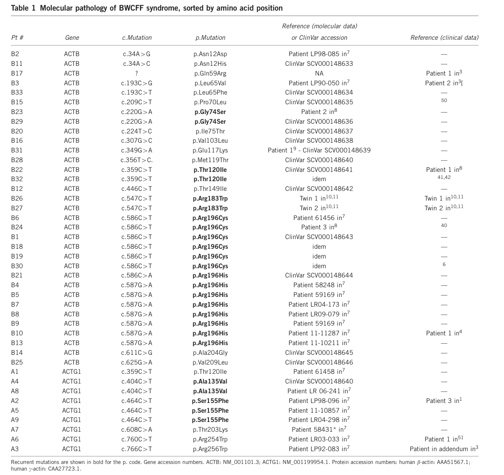

Ask a research question about Baraitser-Winter Cerebrofrontofacial Syndrome. OpenScientist will conduct autonomous deep research using the Disorder Mechanisms Knowledge Base and PubMed literature (typically 10-30 minutes).
Do not include personal health information in your question. Questions and results are cached in your browser's local storage.
name: Baraitser-Winter Cerebrofrontofacial Syndrome
creation_date: "2026-06-05T00:00:00Z"
category: Mendelian
disease_term:
preferred_term: Baraitser-Winter cerebrofrontofacial syndrome
term:
id: MONDO:0017579
label: Baraitser-Winter cerebrofrontofacial syndrome
references:
- reference: PMID:26583190
title: "Baraitser-Winter Cerebrofrontofacial Syndrome."
tags:
- GeneReviews
parents:
- Rare neurodevelopmental syndrome
- Cortical malformation syndrome
has_subtypes:
- name: BRWS1
display_name: Baraitser-Winter syndrome 1 (ACTB)
description: >
Caused by heterozygous gain-of-function de novo missense variants in ACTB
(beta-actin). Associated with a broader range of severity; ACTB mutations
are enriched among the most severe cases including full lissencephaly and
additional congenital anomalies.
subtype_term:
preferred_term: Baraitser-Winter syndrome 1
term:
id: MONDO:0009470
label: Baraitser-Winter syndrome 1
genes:
- preferred_term: ACTB
term:
id: hgnc:132
label: ACTB
- name: BRWS2
display_name: Baraitser-Winter syndrome 2 (ACTG1)
description: >
Caused by heterozygous gain-of-function de novo missense variants in ACTG1
(gamma-actin). Nearly all patients have some degree of pachygyria. ACTG1
mutations at different positions also cause autosomal dominant non-syndromic
hearing loss DFNA20/26.
subtype_term:
preferred_term: Baraitser-winter syndrome 2
term:
id: MONDO:0013812
label: Baraitser-winter syndrome 2
genes:
- preferred_term: ACTG1
term:
id: hgnc:144
label: ACTG1
pathophysiology:
- name: ACTB/ACTG1 Gain-of-Function Variants Alter Actin Dynamics
description: >
Heterozygous de novo gain-of-function missense variants in ACTB (beta-actin)
or ACTG1 (gamma-actin) alter the actin monomer conformation in a dominant
manner, disrupting the G-actin to F-actin treadmilling equilibrium. The
recurrent mutations shift the balance toward increased filamentous actin
(F-actin) stability and impaired dynamic turnover, producing defective
lamellipodia and filopodia formation in migrating cells throughout
embryogenesis.
biological_processes:
- preferred_term: actin cytoskeleton organization
term:
id: GO:0030036
label: actin cytoskeleton organization
- preferred_term: actin filament polymerization
term:
id: GO:0030041
label: actin filament polymerization
evidence:
- reference: PMID:22366783
reference_title: "De novo mutations in the actin genes ACTB and ACTG1 cause Baraitser-Winter syndrome."
supports: SUPPORT
evidence_source: HUMAN_CLINICAL
snippet: >-
Using whole-exome sequencing of three proband-parent trios, we
identified de novo missense changes in the cytoplasmic actin-encoding
genes ACTB and ACTG1 in one and two probands, respectively.
explanation: >-
Establishes that de novo missense mutations in cytoplasmic actin genes
ACTB and ACTG1 are the molecular cause of Baraitser-Winter syndrome.
- reference: PMID:22366783
reference_title: "De novo mutations in the actin genes ACTB and ACTG1 cause Baraitser-Winter syndrome."
supports: SUPPORT
evidence_source: HUMAN_CLINICAL
snippet: >-
Sequencing of both genes in 15 additional affected individuals
identified disease-causing mutations in all probands, including two
recurrent de novo alterations (ACTB, encoding p.Arg196His, and ACTG1,
encoding p.Ser155Phe).
explanation: >-
Confirms recurrent de novo mutations in ACTB and ACTG1 as the
universal genetic basis of Baraitser-Winter syndrome in a cohort of 18
patients.
downstream:
- target: Actin-Dependent Apical Progenitor Cleavage-Plane Defect
description: >-
The same ACTB/ACTG1-driven actin cytoskeletal dysregulation can also
perturb ventricular-zone progenitor cleavage-plane orientation in human
cortical organoids.
- target: Impaired Neuronal Radial Migration
description: >-
Altered actin treadmilling impairs lamellipodia-driven radial migration
of cortical neurons from the ventricular zone to laminar destinations.
- target: Disrupted Optic Fissure Closure Causing Coloboma
description: >-
Actin-dependent cell movements required for optic fissure closure during
embryonic weeks 5-7 are impaired, preventing complete closure.
- target: Disrupted Neural Crest Cell Migration Producing Craniofacial Features
description: >-
Cranial neural crest cells depend on actin-driven lamellipodia for
directed migration; gain-of-function mutations impair this, producing
the characteristic craniofacial gestalt.
- name: Impaired Neuronal Radial Migration
description: >
Proper radial migration of post-mitotic cortical neurons from the
ventricular zone to their laminar destinations requires actin-driven
lamellipodia protrusion guided by radial glial scaffolding. Gain-of-function
actin mutations impair this motility, causing neurons to arrest at
intermediate positions and producing pachygyria (the predominant brain
malformation) or in severe cases lissencephaly. The characteristic
anteroposterior severity gradient in BRWS reflects regional differences
in the temporal window of actin-dependent migration.
cell_types:
- preferred_term: neural progenitor cell
term:
id: CL:0011020
label: neural progenitor cell
- preferred_term: radial glial cell
term:
id: CL:0000681
label: radial glial cell
biological_processes:
- preferred_term: neuron migration
term:
id: GO:0001764
label: neuron migration
- preferred_term: cytoskeleton organization
term:
id: GO:0007010
label: cytoskeleton organization
evidence:
- reference: PMID:22366783
reference_title: "De novo mutations in the actin genes ACTB and ACTG1 cause Baraitser-Winter syndrome."
supports: SUPPORT
evidence_source: HUMAN_CLINICAL
snippet: >-
we report a study of Baraitser-Winter syndrome, a well-defined disorder
characterized by distinct craniofacial features, ocular colobomata and
neuronal migration defect.
explanation: >-
The foundational paper establishes neuronal migration defect as a core
pathological feature of BRWS, directly linking ACTB/ACTG1 mutations to
impaired cortical migration.
- reference: PMID:25052316
reference_title: "Baraitser-Winter cerebrofrontofacial syndrome: delineation of the spectrum in 42 cases."
supports: SUPPORT
evidence_source: HUMAN_CLINICAL
snippet: >-
Nearly all patients with ACTG1 mutations, and around 60% of those with
ACTB mutations have some degree of pachygyria with anteroposterior
severity gradient, rarely lissencephaly or neuronal heterotopia.
explanation: >-
Quantifies the frequency and gradient of cortical malformation across
42 cases, confirming that impaired neuronal migration is the central
neuropathological mechanism.
downstream:
- target: Cortical Dyslamination Leading to Intellectual Disability and Epilepsy
description: >-
Neurons arrested at incorrect laminar positions produce dyslaminated
cortex with disrupted thalamocortical connectivity, causing intellectual
disability and epileptogenesis.
- name: Actin-Dependent Apical Progenitor Cleavage-Plane Defect
description: >-
Human iPSC-derived cerebral organoids carrying patient ACTB or ACTG1
missense variants support a progenitor branch in which actin cytoskeletal
irregularities at the apical region of ventricular-zone progenitors alter
cleavage-plane orientation. This reduces ventricular-zone progenitor
abundance and links the actinopathy to microcephaly and cortical growth
defects, complementing the postmitotic neuronal-migration branch.
genes:
- preferred_term: ACTB
term:
id: hgnc:132
label: ACTB
- preferred_term: ACTG1
term:
id: hgnc:144
label: ACTG1
cell_types:
- preferred_term: ventricular-zone neural progenitor cell
term:
id: CL:0011020
label: neural progenitor cell
- preferred_term: radial glial progenitor
term:
id: CL:0000681
label: radial glial cell
biological_processes:
- preferred_term: actin cytoskeleton organization
term:
id: GO:0030036
label: actin cytoskeleton organization
modifier: DYSREGULATED
- preferred_term: mitotic spindle organization
term:
id: GO:0007052
label: mitotic spindle organization
modifier: DYSREGULATED
evidence:
- reference: DOI:10.1101/2022.12.07.519435
reference_title: "Cerebral organoids expressing mutant actin genes reveal cellular mechanism underlying microcephaly"
supports: SUPPORT
evidence_source: IN_VITRO
snippet: >-
Here we used patient-derived cerebral organoids to gain insight into
the pathogenesis underlying this cortical malformation.
explanation: >-
Establishes a human cerebral organoid model as direct model-system
evidence for the cortical malformation mechanism.
- reference: DOI:10.1101/2022.12.07.519435
reference_title: "Cerebral organoids expressing mutant actin genes reveal cellular mechanism underlying microcephaly"
supports: SUPPORT
evidence_source: IN_VITRO
snippet: >-
Cerebral organoids from induced pluripotent stem cells (iPSCs) of
patients with the Baraitser-Winter- CerebroFrontoFacial syndrome
(BWCFF-S), expressing either an ACTB or an ACTG1 missense mutation,
are reduced in size, showing a thinner ventricular zone (VZ).
explanation: >-
Supports a human iPSC-derived organoid progenitor-pool branch for ACTB
and ACTG1 disease.
- reference: DOI:10.1101/2022.12.07.519435
reference_title: "Cerebral organoids expressing mutant actin genes reveal cellular mechanism underlying microcephaly"
supports: SUPPORT
evidence_source: IN_VITRO
snippet: >-
This decrease in VZ progenitors is in turn associated with a striking
change in the orientation of their cleavage plane from predominantly
vertical (control) to predominantly horizontal (BWCFF-S), which is
incompatible with increasing VZ progenitor abundance.
explanation: >-
Links reduced ventricular-zone progenitors to altered cleavage-plane
orientation in the organoid model.
downstream:
- target: Cortical Dyslamination Leading to Intellectual Disability and Epilepsy
description: >-
The progenitor cleavage-plane branch reduces cortical progenitor output
and likely compounds the neuronal migration/dyslamination branch that
drives neurological disability.
- name: Cortical Dyslamination Leading to Intellectual Disability and Epilepsy
description: >
Failure of neurons to reach their correct laminar positions produces a
disorganised cortex with abnormally broad gyri (pachygyria) or absent gyri
(lissencephaly). The resulting cortical dyslamination disrupts
thalamocortical and cortico-cortical connectivity, manifesting as
intellectual disability of variable severity and epileptogenesis with
refractory seizures.
evidence:
- reference: PMID:25052316
reference_title: "Baraitser-Winter cerebrofrontofacial syndrome: delineation of the spectrum in 42 cases."
supports: SUPPORT
evidence_source: HUMAN_CLINICAL
snippet: >-
Intellectual disability and epilepsy are variable in severity and
largely correlate with CNS anomalies.
explanation: >-
Confirms that intellectual disability and epilepsy severity are directly
related to the extent of cortical dyslamination, linking impaired
neuronal migration to downstream neurological consequences.
- name: Disrupted Optic Fissure Closure Causing Coloboma
description: >
Closure of the choroidal fissure during embryonic weeks 5-7 requires
coordinated actin-dependent cell migration in the optic cup. Gain-of-function
actin mutations impair this process, preventing complete fissure closure and
resulting in iris or retinal coloboma. This is a direct mechanistic
consequence of disrupted actin dynamics, not an incidental feature.
biological_processes:
- preferred_term: cytoskeleton organization
term:
id: GO:0007010
label: cytoskeleton organization
evidence:
- reference: PMID:25052316
reference_title: "Baraitser-Winter cerebrofrontofacial syndrome: delineation of the spectrum in 42 cases."
supports: SUPPORT
evidence_source: HUMAN_CLINICAL
snippet: >-
Iris or retinal coloboma is present in many cases, as is sensorineural
deafness.
explanation: >-
Documents coloboma as a frequent feature in the 42-case cohort,
consistent with the mechanism of impaired optic fissure closure
secondary to actin cytoskeletal dysfunction.
- name: Disrupted Neural Crest Cell Migration Producing Craniofacial Features
description: >
Cranial neural crest cells that populate the craniofacial mesenchyme use
actin-driven lamellipodia for directed migration. Gain-of-function actin
mutations impair this process, producing the characteristic craniofacial
gestalt: hypertelorism, metopic ridge, bilateral ptosis, arched eyebrows,
and broad nasal bridge. These features reflect defective neural crest
morphogenetic movements during craniofacial development.
cell_types:
- preferred_term: migratory cranial neural crest cell
term:
id: CL:0000008
label: migratory cranial neural crest cell
biological_processes:
- preferred_term: neural crest cell migration
term:
id: GO:0001755
label: neural crest cell migration
evidence:
- reference: PMID:27625340
reference_title: "Baraitser-Winter cerebrofrontofacial syndrome."
supports: SUPPORT
evidence_source: HUMAN_CLINICAL
snippet: >-
characterised by intellectual disability (mild to severe) and
distinctive facial appearance (metopic ridging/trigonocephaly, bilateral
ptosis, hypertelorism).
explanation: >-
Documents the core craniofacial phenotype of BRWS, consistent with
disrupted neural crest cell migration during embryonic craniofacial
development.
phenotypes:
- name: Pachygyria
description: >
Pachygyria with anteroposterior severity gradient is the hallmark cortical
malformation. ACTG1 mutations cause pachygyria in nearly all cases; ACTB
mutations in approximately 60%. Lissencephaly occurs in more severe cases,
predominantly with ACTB mutations.
category: Neurological
frequency: FREQUENT
phenotype_term:
preferred_term: Pachygyria
term:
id: HP:0001302
label: Pachygyria
evidence:
- reference: PMID:25052316
reference_title: "Baraitser-Winter cerebrofrontofacial syndrome: delineation of the spectrum in 42 cases."
supports: SUPPORT
evidence_source: HUMAN_CLINICAL
snippet: >-
Nearly all patients with ACTG1 mutations, and around 60% of those with
ACTB mutations have some degree of pachygyria with anteroposterior
severity gradient, rarely lissencephaly or neuronal heterotopia.
explanation: >-
Quantifies pachygyria frequency by subtype in 42 cases, establishing it
as the primary cortical malformation with characteristic gradient.
- name: Microcephaly
description: >
Postnatal-onset microcephaly may develop over time in some patients,
reflecting progressive secondary effects of cortical dyslamination on
brain growth.
category: Neurological
phenotype_term:
preferred_term: Microcephaly
term:
id: HP:0000252
label: Microcephaly
clinical_course: PROGRESSIVE
evidence:
- reference: PMID:25052316
reference_title: "Baraitser-Winter cerebrofrontofacial syndrome: delineation of the spectrum in 42 cases."
supports: SUPPORT
evidence_source: HUMAN_CLINICAL
snippet: >-
Microcephaly may develop with time.
explanation: >-
Verloes et al. note progressive postnatal-onset microcephaly in the
42-case cohort, indicating a secondary effect of cortical malformation
on brain growth.
- name: Intellectual Disability
description: Intellectual disability of variable severity, correlated with the degree of cortical malformation.
category: Neurological
frequency: VERY_FREQUENT
phenotype_term:
preferred_term: Intellectual disability
term:
id: HP:0001249
label: Intellectual disability
evidence:
- reference: PMID:26583190
reference_title: "Baraitser-Winter Cerebrofrontofacial Syndrome."
supports: SUPPORT
evidence_source: HUMAN_CLINICAL
snippet: >-
Baraitser-Winter cerebrofrontofacial (BWCFF) syndrome is a multiple
congenital anomaly syndrome characterized by typical craniofacial
features and intellectual disability.
explanation: >-
GeneReviews defines intellectual disability as a cardinal feature of
BWCFF syndrome.
- name: Seizures
description: Epileptic seizures of variable severity, often refractory.
category: Neurological
frequency: FREQUENT
phenotype_term:
preferred_term: Seizures
term:
id: HP:0001250
label: Seizure
evidence:
- reference: PMID:26583190
reference_title: "Baraitser-Winter Cerebrofrontofacial Syndrome."
supports: SUPPORT
evidence_source: HUMAN_CLINICAL
snippet: >-
Seizures, congenital heart defects, renal malformations, and
gastrointestinal dysfunction are also common.
explanation: >-
GeneReviews identifies seizures as a common manifestation in BWCFF
syndrome alongside other systemic features.
- name: Global Developmental Delay
description: Delays in motor and cognitive milestones.
category: Neurological
frequency: VERY_FREQUENT
phenotype_term:
preferred_term: Global developmental delay
term:
id: HP:0001263
label: Global developmental delay
evidence:
- reference: PMID:26583190
reference_title: "Baraitser-Winter Cerebrofrontofacial Syndrome."
supports: SUPPORT
evidence_source: HUMAN_CLINICAL
snippet: >-
Intellectual disability, which is common but variable, is related to
the severity of the brain malformations.
explanation: >-
GeneReviews links cognitive and developmental delay to the cortical
malformation severity in BWCFF syndrome.
- name: Iris Coloboma
description: >
Iris or retinal coloboma due to failure of optic fissure closure. A
distinctive ocular feature present in many cases.
category: Ophthalmological
frequency: FREQUENT
phenotype_term:
preferred_term: Iris coloboma
term:
id: HP:0000612
label: Iris coloboma
evidence:
- reference: PMID:25052316
reference_title: "Baraitser-Winter cerebrofrontofacial syndrome: delineation of the spectrum in 42 cases."
supports: SUPPORT
evidence_source: HUMAN_CLINICAL
snippet: >-
Iris or retinal coloboma is present in many cases, as is sensorineural
deafness.
explanation: >-
Documents coloboma as a frequent feature of Baraitser-Winter syndrome
in a 42-case cohort.
- name: Congenital Ptosis
description: >
Bilateral congenital non-myopathic ptosis is a cardinal craniofacial
feature, reflecting disrupted neural crest cell migration affecting
levator palpebrae muscle development.
category: Ophthalmological
frequency: VERY_FREQUENT
phenotype_term:
preferred_term: Congenital ptosis
term:
id: HP:0000508
label: Ptosis
evidence:
- reference: PMID:25052316
reference_title: "Baraitser-Winter cerebrofrontofacial syndrome: delineation of the spectrum in 42 cases."
supports: SUPPORT
evidence_source: HUMAN_CLINICAL
snippet: >-
hypertelorism, broad nose with large tip and prominent root, congenital
non-myopathic ptosis, ridged metopic suture and arched eyebrows.
explanation: >-
Lists congenital non-myopathic ptosis as a defining facial feature in
the largest clinical series of BRWS.
- name: Hypertelorism
description: Widely spaced eyes, a consistent craniofacial feature.
category: Craniofacial
frequency: VERY_FREQUENT
phenotype_term:
preferred_term: Hypertelorism
term:
id: HP:0000316
label: Hypertelorism
evidence:
- reference: PMID:27625340
reference_title: "Baraitser-Winter cerebrofrontofacial syndrome."
supports: SUPPORT
evidence_source: HUMAN_CLINICAL
snippet: >-
characterised by intellectual disability (mild to severe) and
distinctive facial appearance (metopic ridging/trigonocephaly, bilateral
ptosis, hypertelorism).
explanation: >-
Yates et al. review establishes hypertelorism as a defining craniofacial
feature of BWCFF syndrome.
- name: Trigonocephaly or Metopic Ridge
description: >
Ridged metopic suture or trigonocephaly (metopic synostosis) is a
characteristic craniofacial feature resulting from early fusion or
prominence of the metopic suture. Reflects the impact of disrupted neural
crest cell migration on calvarial bone morphogenesis.
category: Craniofacial
frequency: FREQUENT
phenotype_term:
preferred_term: Trigonocephaly
term:
id: HP:0000243
label: Trigonocephaly
evidence:
- reference: PMID:25052316
reference_title: "Baraitser-Winter cerebrofrontofacial syndrome: delineation of the spectrum in 42 cases."
supports: SUPPORT
evidence_source: HUMAN_CLINICAL
snippet: >-
hypertelorism, broad nose with large tip and prominent root, congenital
non-myopathic ptosis, ridged metopic suture and arched eyebrows.
explanation: >-
Documents ridged metopic suture as a consistent craniofacial feature in
the 42-case Verloes cohort.
- name: Wide Nasal Bridge and Broad Nose
description: Broad nasal bridge with large nasal tip is a prominent craniofacial feature.
category: Craniofacial
frequency: VERY_FREQUENT
phenotype_term:
preferred_term: Wide nasal bridge
term:
id: HP:0000431
label: Wide nasal bridge
evidence:
- reference: PMID:25052316
reference_title: "Baraitser-Winter cerebrofrontofacial syndrome: delineation of the spectrum in 42 cases."
supports: SUPPORT
evidence_source: HUMAN_CLINICAL
snippet: >-
hypertelorism, broad nose with large tip and prominent root, congenital
non-myopathic ptosis, ridged metopic suture and arched eyebrows.
explanation: >-
Documents broad nose with large tip as a defining facial feature in the
comprehensive 42-case cohort.
- name: Short Stature
description: Moderate short stature is a common systemic feature.
category: Growth
frequency: FREQUENT
phenotype_term:
preferred_term: Short stature
term:
id: HP:0004322
label: Short stature
evidence:
- reference: PMID:27625340
reference_title: "Baraitser-Winter cerebrofrontofacial syndrome."
supports: SUPPORT
evidence_source: HUMAN_CLINICAL
snippet: >-
Other features include moderate short stature, contractures, congenital
cardiac disease and genitourinary malformations.
explanation: >-
Yates et al. identify short stature as a common feature of BWCFF
syndrome alongside other systemic manifestations.
- name: Shoulder Girdle Muscle Atrophy
description: >
Reduction of shoulder girdle muscle bulk is a recognised feature of BRWS,
sometimes associated with progressive joint stiffness. Early muscular
involvement may present as arthrogryposis in some cases.
category: Musculoskeletal
frequency: FREQUENT
phenotype_term:
preferred_term: Shoulder girdle muscle atrophy
term:
id: HP:0003724
label: Shoulder girdle muscle atrophy
evidence:
- reference: PMID:25052316
reference_title: "Baraitser-Winter cerebrofrontofacial syndrome: delineation of the spectrum in 42 cases."
supports: SUPPORT
evidence_source: HUMAN_CLINICAL
snippet: >-
Reduction of shoulder girdle muscle bulk and progressive joint stiffness
is common. Early muscular involvement, occasionally with congenital
arthrogryposis, may be present.
explanation: >-
Verloes et al. identify shoulder girdle muscle reduction and joint
stiffness as common features in 42 BRWS cases, with occasional
arthrogryposis.
- name: Sensorineural Hearing Loss
description: >
Sensorineural hearing impairment affecting both subtypes, though more
frequently reported in BRWS2 (ACTG1) given gamma-actin's role in auditory
hair cell stereocilia.
category: Auditory
frequency: FREQUENT
phenotype_term:
preferred_term: Sensorineural hearing loss
term:
id: HP:0000407
label: Sensorineural hearing impairment
evidence:
- reference: PMID:26583190
reference_title: "Baraitser-Winter Cerebrofrontofacial Syndrome."
supports: SUPPORT
evidence_source: HUMAN_CLINICAL
snippet: >-
Many (but not all) affected individuals have pachygyria that is
predominantly frontal, wasting of the shoulder girdle muscles, and
sensory impairment due to iris or retinal coloboma and/or sensorineural
deafness.
explanation: >-
GeneReviews documents sensorineural deafness as a frequent sensory
complication in BWCFF syndrome.
- name: Congenital Heart Defects
description: >
Structural cardiac anomalies occur in some patients with BWCFF syndrome.
category: Cardiovascular
frequency: OCCASIONAL
phenotype_term:
preferred_term: Abnormal heart morphology
term:
id: HP:0001627
label: Abnormal heart morphology
evidence:
- reference: PMID:25052316
reference_title: "Baraitser-Winter cerebrofrontofacial syndrome: delineation of the spectrum in 42 cases."
supports: SUPPORT
evidence_source: HUMAN_CLINICAL
snippet: >-
Cleft lip and palate, hallux duplex, congenital heart defects and renal
tract anomalies are seen in some cases.
explanation: >-
Verloes et al. document congenital heart defects in some patients in
the 42-case cohort, supporting an occasional frequency.
- name: Renal Malformations
description: Renal tract anomalies are seen in some patients.
category: Renal
frequency: OCCASIONAL
phenotype_term:
preferred_term: Abnormal renal morphology
term:
id: HP:0012210
label: Abnormal renal morphology
evidence:
- reference: PMID:25052316
reference_title: "Baraitser-Winter cerebrofrontofacial syndrome: delineation of the spectrum in 42 cases."
supports: SUPPORT
evidence_source: HUMAN_CLINICAL
snippet: >-
Cleft lip and palate, hallux duplex, congenital heart defects and renal
tract anomalies are seen in some cases.
explanation: >-
Verloes et al. document renal tract anomalies in some patients in the
42-case cohort, establishing it as an occasional feature of BRWS.
- name: Gastrointestinal Dysfunction
description: >
Gastrointestinal problems are reported in some patients with BWCFF syndrome.
GeneReviews recommends routine surveillance and follow-up for gastrointestinal
dysfunction as part of standard management.
category: Gastrointestinal
frequency: FREQUENT
phenotype_term:
preferred_term: Abnormality of the gastrointestinal tract
term:
id: HP:0011024
label: Abnormality of the gastrointestinal tract
evidence:
- reference: PMID:26583190
reference_title: "Baraitser-Winter Cerebrofrontofacial Syndrome."
supports: SUPPORT
evidence_source: HUMAN_CLINICAL
snippet: >-
Seizures, congenital heart defects, renal malformations, and
gastrointestinal dysfunction are also common.
explanation: >-
GeneReviews lists gastrointestinal dysfunction as a common feature of
BWCFF syndrome requiring routine follow-up.
genetic:
- name: ACTB gain-of-function variants
gene_term:
preferred_term: ACTB
term:
id: hgnc:132
label: ACTB
association: >-
Causative de novo gain-of-function missense variants; recurrent p.Arg196His
among the most common
relationship_type: CAUSATIVE
variant_origin: GERMLINE
subtype: BRWS1
notes: >
Most pathogenic variants are de novo missense substitutions. ACTB mutations
are enriched among severe phenotypes including lissencephaly and additional
congenital anomalies. Autosomal dominant inheritance.
inheritance:
- name: Autosomal dominant inheritance
inheritance_term:
preferred_term: Autosomal dominant inheritance
term:
id: HP:0000006
label: Autosomal dominant inheritance
evidence:
- reference: PMID:23756437
reference_title: "Severe forms of Baraitser-Winter syndrome are caused by ACTB mutations rather than ACTG1 mutations."
supports: SUPPORT
evidence_source: HUMAN_CLINICAL
snippet: >-
We suggest that mutations in ACTB cause a distinctly more severe
phenotype than ACTG1 mutations, despite the structural similarity of
beta- and gamma-actins and their overlapping expression pattern.
explanation: >-
Di Donato et al. establish that ACTB mutations produce more severe
BRWS than ACTG1 mutations, including cases formerly classified as
Fryns-Aftimos syndrome.
- name: ACTG1 gain-of-function variants
gene_term:
preferred_term: ACTG1
term:
id: hgnc:144
label: ACTG1
association: Causative de novo gain-of-function missense variants
relationship_type: CAUSATIVE
variant_origin: GERMLINE
subtype: BRWS2
notes: >
Mutations cluster at positions equivalent to ACTB hotspots. ACTG1 variants
at different positions cause autosomal dominant non-syndromic hearing loss
DFNA20/26. Nearly all BRWS2 patients have some degree of pachygyria.
inheritance:
- name: Autosomal dominant inheritance
inheritance_term:
preferred_term: Autosomal dominant inheritance
term:
id: HP:0000006
label: Autosomal dominant inheritance
evidence:
- reference: PMID:22366783
reference_title: "De novo mutations in the actin genes ACTB and ACTG1 cause Baraitser-Winter syndrome."
supports: SUPPORT
evidence_source: HUMAN_CLINICAL
snippet: >-
our results confirm that trio-based exome sequencing is a powerful
approach to discover genes causing sporadic developmental disorders,
emphasize the overlapping roles of cytoplasmic actin proteins in
development and suggest that Baraitser-Winter syndrome is the
predominant phenotype associated with mutation of these two genes.
explanation: >-
Establishes ACTB and ACTG1 as the two genes whose mutation causes
Baraitser-Winter syndrome, with ACTG1 being identified in two of the
original three patients.
treatments:
- name: Antiepileptic Therapy
description: >
Seizures in BRWS are often refractory and require optimisation of
anti-epileptic drug management. No disease-specific therapies exist.
treatment_term:
preferred_term: Pharmacotherapy
term:
id: NCIT:C15986
label: Pharmacotherapy
evidence:
- reference: PMID:26583190
reference_title: "Baraitser-Winter Cerebrofrontofacial Syndrome."
supports: SUPPORT
evidence_source: HUMAN_CLINICAL
snippet: >-
management of developmental delay and intellectual disability is
tailored to the individual.
explanation: >-
GeneReviews recommends tailored management including treatment of
seizures through standard specialist care, reflecting the individualised
nature of antiepileptic therapy in BRWS.
- name: Multidisciplinary Supportive Care
description: >
Multidisciplinary supportive care including ophthalmological evaluation for
coloboma, audiological evaluation for hearing loss, neurological follow-up
for seizures, cardiac evaluation for congenital heart defects, and
physiotherapy for musculoskeletal involvement.
treatment_term:
preferred_term: supportive care
term:
id: MAXO:0000950
label: supportive care
evidence:
- reference: PMID:26583190
reference_title: "Baraitser-Winter Cerebrofrontofacial Syndrome."
supports: SUPPORT
evidence_source: HUMAN_CLINICAL
snippet: >-
Surveillance: Routine follow up recommended for neurodevelopmental
assessment in all; follow up as needed for those with seizures
(neurologic evaluation), coloboma or microphthalmia (ophthalmologic
evaluation), hearing loss (audiologic evaluation), cardiac defects,
renal tract anomalies, and gastrointestinal dysfunction.
explanation: >-
GeneReviews recommends routine multidisciplinary surveillance covering
the major organ systems affected in BWCFF syndrome.
discussions:
- discussion_id: gap_bwcff_organoid_to_human_cortical_malformation_fidelity
prompt: >-
How faithfully do human iPSC-derived ACTB/ACTG1 cerebral organoids explain
the full in vivo Baraitser-Winter cortical malformation spectrum,
including pachygyria/lissencephaly, anterior-predominant gradients and
genotype-specific ACTB versus ACTG1 severity?
kind: HUMAN_MODEL_MISMATCH
status: OPEN
attaches_to:
- pathophysiology#ACTB/ACTG1 Gain-of-Function Variants Alter Actin Dynamics
- pathophysiology#Impaired Neuronal Radial Migration
- pathophysiology#Actin-Dependent Apical Progenitor Cleavage-Plane Defect
- pathophysiology#Cortical Dyslamination Leading to Intellectual Disability and Epilepsy
rationale: >-
The existing human cohort evidence establishes ACTB/ACTG1 actinopathy with
pachygyria, rare lissencephaly and neuronal heterotopia, while the newer
human cerebral organoid evidence directly models ventricular-zone
progenitor depletion and cleavage-plane defects. The open translatability
question is whether the organoid progenitor phenotype is sufficient to
explain the human cortical migration/lamination pattern, or whether
later fetal tissue architecture, regional patterning, radial glial scaffold
organization or variant-specific actin-binding effects are required to
reproduce the in vivo malformation skeleton.
evidence:
- reference: PMID:25052316
reference_title: "Baraitser-Winter cerebrofrontofacial syndrome: delineation of the spectrum in 42 cases."
supports: SUPPORT
evidence_source: HUMAN_CLINICAL
snippet: >-
Nearly all patients with ACTG1 mutations, and around 60% of those with
ACTB mutations have some degree of pachygyria with anteroposterior
severity gradient, rarely lissencephaly or neuronal heterotopia.
explanation: >-
Defines the human cortical malformation pattern that the organoid
model should be tested against.
- reference: DOI:10.1101/2022.12.07.519435
reference_title: "Cerebral organoids expressing mutant actin genes reveal cellular mechanism underlying microcephaly"
supports: SUPPORT
evidence_source: IN_VITRO
snippet: >-
Various cytoskeletal and morphological irregularities of BWCFF-S VZ
progenitors, notably in the apical region of these cells, seemingly
contribute to their predominantly horizontal cleavage plane
orientation.
explanation: >-
Supports the organoid-specific progenitor mechanism whose fidelity to
the broader human cortical malformation remains unresolved.
proposed_experiments:
- experiment_id: exp_bwcff_isogenic_organoid_variant_gradient_panel
name: ACTB/ACTG1 isogenic cerebral organoid cortical-gradient panel
description: >-
Generate matched patient-derived, CRISPR-corrected and knock-in human
cerebral organoids for recurrent ACTB and ACTG1 Baraitser-Winter
variants. Quantify apical progenitor architecture, spindle/cleavage
orientation, radial glial scaffold organization, neuronal migration,
cortical-plate-like layering and anterior/posterior patterning marker
differences, then compare variant-specific outputs with human MRI and
fetal cortical tissue when available.
experiment_type:
preferred_term: isogenic cerebral organoid actinopathy assay
model_systems:
- name: Human iPSC-derived Baraitser-Winter cerebral organoid
description: >-
Patient-derived or genome-edited human cerebral organoids carrying
ACTB or ACTG1 missense variants with isogenic corrected controls.
experimental_model_type: ORGANOID
namo_type: namo:Organoid
organism:
preferred_term: human
term:
id: NCBITaxon:9606
label: Homo sapiens
tissue_term:
preferred_term: cerebral cortex
term:
id: UBERON:0000956
label: cerebral cortex
cell_types:
- preferred_term: neural progenitor cell
term:
id: CL:0011020
label: neural progenitor cell
- preferred_term: radial glial cell
term:
id: CL:0000681
label: radial glial cell
cell_source: Patient-derived or isogenic engineered human induced pluripotent stem cells
culture_system: Three-dimensional cerebral organoid with imaging and single-cell readouts
perturbations:
- name: ACTB/ACTG1 variant correction and knock-in
target: pathophysiology#ACTB/ACTG1 Gain-of-Function Variants Alter Actin Dynamics
description: >-
Correct patient variants and introduce matched variants into
control iPSCs to distinguish causal actinopathy effects from donor
background.
readouts:
- name: Progenitor orientation and cortical organization fidelity
target: pathophysiology#Actin-Dependent Apical Progenitor Cleavage-Plane Defect
description: >-
Quantify VZ thickness, apical cytoskeletal architecture,
cleavage-plane orientation, radial glial scaffolding, neuronal
migration distance, cortical-plate-like organization and
region-patterning markers.
assays:
- preferred_term: immunostaining
- preferred_term: live imaging
- preferred_term: single-cell transcriptomic profiling
direction: NEGATIVE
controls:
- name: Isogenic corrected organoids
description: Matched organoids in which the ACTB or ACTG1 variant is corrected.
- name: Isogenic knock-in organoids
description: Wild-type-background organoids carrying introduced ACTB or ACTG1 variants.
decision_criterion: >-
The organoid model supports the human cortical-malformation skeleton if
variant correction rescues progenitor orientation and neuronal
organization, and if ACTB/ACTG1-specific organoid outputs match human
genotype-severity patterns and regional MRI gradients. Persistent
discordance would support an additional human fetal tissue or
long-range migration branch not captured by current organoids.
would_support:
- pathophysiology#Actin-Dependent Apical Progenitor Cleavage-Plane Defect
- pathophysiology#Impaired Neuronal Radial Migration
- pathophysiology#Cortical Dyslamination Leading to Intellectual Disability and Epilepsy
Disease name: Baraitser–Winter cerebrofrontofacial syndrome (BWCFF)
Category: Mendelian (autosomal dominant actinopathy)
MONDO ID: Not located in the retrieved sources (should be added from MONDO/NCBI resources in a follow-on curation step).
Baraitser–Winter cerebrofrontofacial syndrome is a rare neurodevelopmental multiple-congenital-anomaly syndrome characterized by a distinctive craniofacial gestalt, ocular coloboma, and cortical malformations consistent with a neuronal migration disorder (often pachygyria/lissencephaly spectrum), with variable intellectual disability, epilepsy, and sensorineural hearing loss. It is caused predominantly by heterozygous de novo missense variants in the cytoplasmic actin genes ACTB (β-actin) or ACTG1 (γ-actin), with genotype–phenotype differences across genes and across specific amino-acid substitutions. (nie2022identificationofa pages 1-2, riviere2012denovomutations pages 9-12, verloes2015baraitser–wintercerebrofrontofacialsyndrome pages 4-5)
A key primary-discovery abstract quote (2012) captures the defining causal model: - “Using whole-exome sequencing of three proband-parent trios, we identified de novo missense changes in the cytoplasmic actin–encoding genes ACTB and ACTG1…” (Rivière et al., Nature Genetics, 2012; DOI: https://doi.org/10.1038/ng.1091) (riviere2012denovomutations pages 5-9)
BWCFF is a molecularly defined actinopathy combining craniofacial dysmorphism and anterior-predominant cortical malformations (pachygyria/lissencephaly), frequently with ptosis, hypertelorism, arched eyebrows, broad nasal tip, ocular coloboma, developmental delay/intellectual disability, seizures, and sensorineural hearing loss. (verloes2015baraitser–wintercerebrofrontofacialsyndrome pages 3-4, verloes2015baraitser–wintercerebrofrontofacialsyndrome pages 4-5, verloes2015baraitser–wintercerebrofrontofacialsyndrome pages 1-2)
The literature uses OMIM disease identifiers #243310 and #614583 (sometimes treated as “types”), and discusses overlap/reclassification with Fryns–Aftimos syndrome (OMIM 606155). (riviere2012denovomutations pages 5-9, donato2014severeformsof pages 1-3, aiyar2019prenatalpresentationin pages 2-3, dawidziuk2022denovoactg1 pages 1-2)
| Identifier type | Value | Notes/definition | Source |
|---|---|---|---|
| Preferred disease name / synonym | Baraitser–Winter cerebrofrontofacial syndrome (BWCFF) | Unified designation proposed for previously separated clinical labels including Baraitser–Winter syndrome / Baraitser–Winter malformation syndrome and some Fryns–Aftimos / cerebrofrontofacial presentations; rare autosomal-dominant developmental disorder linked to ACTB or ACTG1 variants. (nie2022identificationofa pages 1-2, verloes2015baraitser–wintercerebrofrontofacialsyndrome pages 2-3, verloes2015baraitser–wintercerebrofrontofacialsyndrome pages 1-2) | Nie et al., 2022, Front Genet. https://doi.org/10.3389/fgene.2022.828120 ; Verloes et al., 2015, Eur J Hum Genet. https://doi.org/10.1038/ejhg.2014.95 |
| OMIM disease # | OMIM 243310 | Explicitly cited in multiple papers for Baraitser–Winter syndrome / BWCFF. (riviere2012denovomutations pages 5-9, nie2022identificationofa pages 1-2, donato2014severeformsof pages 1-3, aiyar2019prenatalpresentationin pages 2-3, dawidziuk2022denovoactg1 pages 1-2) | Rivière et al., 2012, Nat Genet. https://doi.org/10.1038/ng.1091 ; Nie et al., 2022, Front Genet. https://doi.org/10.3389/fgene.2022.828120 ; Donato et al., 2014, Eur J Hum Genet. https://doi.org/10.1038/ejhg.2013.130 ; Aiyar et al., 2019, Clin Dysmorphol. https://doi.org/10.1097/MCD.0000000000000266 ; Dawidziuk et al., 2022, Int J Mol Sci. https://doi.org/10.3390/ijms23020692 |
| OMIM disease # / syndrome type label | OMIM 614583 | Cited as the second OMIM Baraitser–Winter entry / “type” in literature; associated with ACTG1-related disease in syndrome-type usage. (donato2014severeformsof pages 1-3, aiyar2019prenatalpresentationin pages 2-3, dawidziuk2022denovoactg1 pages 1-2) | Donato et al., 2014, Eur J Hum Genet. https://doi.org/10.1038/ejhg.2013.130 ; Aiyar et al., 2019, Clin Dysmorphol. https://doi.org/10.1097/MCD.0000000000000266 ; Dawidziuk et al., 2022, Int J Mol Sci. https://doi.org/10.3390/ijms23020692 |
| Other OMIM overlap | OMIM 606155 (Fryns–Aftimos syndrome) | Reported phenotypic overlap/reclassification; some patients originally labeled Fryns–Aftimos were found to harbor ACTB mutations and are considered within the Baraitser–Winter spectrum. (riviere2012denovomutations pages 5-9, donato2014severeformsof pages 1-3) | Rivière et al., 2012, Nat Genet. https://doi.org/10.1038/ng.1091 ; Donato et al., 2014, Eur J Hum Genet. https://doi.org/10.1038/ejhg.2013.130 |
| Syndrome type label | BRWS1 | Used in recent literature for ACTB-associated Baraitser–Winter syndrome. (dawidziuk2022denovoactg1 pages 1-2) | Dawidziuk et al., 2022, Int J Mol Sci. https://doi.org/10.3390/ijms23020692 |
| Syndrome type label | BRWS2 | Used in recent literature for ACTG1-associated Baraitser–Winter syndrome. (dawidziuk2022denovoactg1 pages 1-2) | Dawidziuk et al., 2022, Int J Mol Sci. https://doi.org/10.3390/ijms23020692 |
| Historical synonym | Baraitser–Winter syndrome | Short disease name used throughout early and later primary literature; characterized by craniofacial anomalies, ocular coloboma, and neuronal migration defects. (riviere2012denovomutations pages 5-9, donato2014severeformsof pages 1-3) | Rivière et al., 2012, Nat Genet. https://doi.org/10.1038/ng.1091 ; Donato et al., 2014, Eur J Hum Genet. https://doi.org/10.1038/ejhg.2013.130 |
| Historical synonym | Baraitser–Winter malformation syndrome (BWMS) | Legacy label included under unified BWCFF terminology. (verloes2015baraitser–wintercerebrofrontofacialsyndrome pages 1-2) | Verloes et al., 2015, Eur J Hum Genet. https://doi.org/10.1038/ejhg.2014.95 |
| Historical/overlap labels | Fryns–Aftimos (FA), cerebrofrontofacial syndrome / CFF (including CFF3) | Previously separate labels now considered overlapping with BWCFF in mutation-positive cases. (verloes2015baraitser–wintercerebrofrontofacialsyndrome pages 2-3, verloes2015baraitser–wintercerebrofrontofacialsyndrome pages 1-2) | Verloes et al., 2015, Eur J Hum Genet. https://doi.org/10.1038/ejhg.2014.95 |
| Causal gene | ACTB | One of the two cytoplasmic actin genes causing BWCFF; ACTB located at 7p22.1 in Verloes et al. (nie2022identificationofa pages 1-2, verloes2015baraitser–wintercerebrofrontofacialsyndrome pages 2-3, verloes2015baraitser–wintercerebrofrontofacialsyndrome pages 1-2) | Nie et al., 2022, Front Genet. https://doi.org/10.3389/fgene.2022.828120 ; Verloes et al., 2015, Eur J Hum Genet. https://doi.org/10.1038/ejhg.2014.95 |
| Causal gene | ACTG1 | One of the two cytoplasmic actin genes causing BWCFF; ACTG1 located at 17q25.3 in Verloes et al. (nie2022identificationofa pages 1-2, verloes2015baraitser–wintercerebrofrontofacialsyndrome pages 2-3, verloes2015baraitser–wintercerebrofrontofacialsyndrome pages 1-2) | Nie et al., 2022, Front Genet. https://doi.org/10.3389/fgene.2022.828120 ; Verloes et al., 2015, Eur J Hum Genet. https://doi.org/10.1038/ejhg.2014.95 |
| Gene transcript accession (explicitly stated) | ACTB: NM_001101.3 | Explicit transcript accession provided in mutation table/source description. (verloes2015baraitser–wintercerebrofrontofacialsyndrome pages 2-3) | Verloes et al., 2015, Eur J Hum Genet. https://doi.org/10.1038/ejhg.2014.95 |
| Gene transcript accession (explicitly stated) | ACTG1: NM_001199954.1 | Explicit transcript accession provided in mutation table/source description. (verloes2015baraitser–wintercerebrofrontofacialsyndrome pages 2-3) | Verloes et al., 2015, Eur J Hum Genet. https://doi.org/10.1038/ejhg.2014.95 |
Table: This table compiles the main disease identifiers, synonyms, overlap labels, and causal genes used in the primary literature for Baraitser–Winter cerebrofrontofacial syndrome. It is useful for harmonizing nomenclature and linking OMIM disease entries with ACTB/ACTG1-mediated disease subtypes.
ICD-10/ICD-11, MeSH, Orphanet IDs: Not identified in the retrieved corpus; should be curated from OMIM/Orphanet/NCBI MeSH/WHO ICD resources.
Evidence here is derived primarily from: - Aggregated disease-level resources and cohorts (notably the 42-case molecularly confirmed series). (verloes2015baraitser–wintercerebrofrontofacialsyndrome pages 1-2, verloes2015baraitser–wintercerebrofrontofacialsyndrome media 35d77931, verloes2015baraitser–wintercerebrofrontofacialsyndrome media 95e3b204, verloes2015baraitser–wintercerebrofrontofacialsyndrome media 87756bb4) - Individual case reports and short series with deep phenotyping (ophthalmology/audiology/prenatal). (kim2024ocularfindingsin pages 1-2, aiyar2019prenatalpresentationin pages 2-3, ghiselli2024hearinglossin pages 4-6)
Primary cause: Germline heterozygous variants in ACTB or ACTG1 affecting cytoplasmic actin function (actin polymerization/dynamics and actin-binding protein interactions). Classical BWCFF is dominated by missense (single amino-acid substitution) variants and is typically de novo. (riviere2012denovomutations pages 9-12, brown2017theclinicalmanifestations pages 4-4, verloes2015baraitser–wintercerebrofrontofacialsyndrome pages 2-3)
Key causal-gene statements: - “Baraitser–Winter cerebrofrontofacial syndrome… is a rare autosomal-dominant developmental disorder associated with variants in the genes ACTB or ACTG1.” (Nie et al., Frontiers in Genetics, 2022; DOI: https://doi.org/10.3389/fgene.2022.828120) (nie2022identificationofa pages 1-2)
Genetic risk factor: carrying a pathogenic/likely pathogenic heterozygous ACTB or ACTG1 variant; most are de novo, but familial transmission with variable expressivity can occur (autosomal dominant). (brown2017theclinicalmanifestations pages 4-4, brown2017theclinicalmanifestations pages 2-3)
Environmental risk factors: Not established in the retrieved literature (no consistent environmental exposures implicated).
Not established in the retrieved literature.
No gene–environment interactions were identified in the retrieved literature.
The largest quantitative dataset in the retrieved evidence is the 42-case molecularly confirmed delineation (33 ACTB, 9 ACTG1), with clinical feature frequencies extracted from Table 2 and associated text. (verloes2015baraitser–wintercerebrofrontofacialsyndrome pages 4-5, verloes2015baraitser–wintercerebrofrontofacialsyndrome media 35d77931, verloes2015baraitser–wintercerebrofrontofacialsyndrome media 95e3b204, verloes2015baraitser–wintercerebrofrontofacialsyndrome media 87756bb4)
| Phenotype (plain language) | Suggested HPO term(s) | Frequency overall and/or by gene | Notes (severity/onset/progression) | Key source |
|---|---|---|---|---|
| Hypertelorism / telecanthus | HP:0000316 Hypertelorism; HP:0000506 Telecanthus | 39/41 (~95%) overall; ACTB 32 cases reported with hypertelorism/telecanthus; ACTG1 7/9 with hypertelorism/telecanthus (~78%) | Typically congenital, part of the characteristic facial gestalt | Verloes 2015 cohort/Table 2 (verloes2015baraitser–wintercerebrofrontofacialsyndrome pages 4-5, verloes2015baraitser–wintercerebrofrontofacialsyndrome pages 2-3, verloes2015baraitser–wintercerebrofrontofacialsyndrome media 35d77931, verloes2015baraitser–wintercerebrofrontofacialsyndrome media 95e3b204, verloes2015baraitser–wintercerebrofrontofacialsyndrome media 87756bb4) |
| Congenital bilateral ptosis | HP:0000508 Ptosis | 37/40 (~93%) overall | Usually congenital and one of the most recognizable presenting signs | Verloes 2015 cohort/Table 2 (verloes2015baraitser–wintercerebrofrontofacialsyndrome pages 3-4, verloes2015baraitser–wintercerebrofrontofacialsyndrome media 35d77931, verloes2015baraitser–wintercerebrofrontofacialsyndrome media 95e3b204, verloes2015baraitser–wintercerebrofrontofacialsyndrome media 87756bb4) |
| Arched eyebrows | HP:0002553 Highly arched eyebrow | 35/40 (~88%) overall; ACTG1 6/7; ACTB 29 cases noted | Common dysmorphic facial feature | Verloes 2015 cohort/Table 2 (verloes2015baraitser–wintercerebrofrontofacialsyndrome pages 3-4, verloes2015baraitser–wintercerebrofrontofacialsyndrome pages 4-5, verloes2015baraitser–wintercerebrofrontofacialsyndrome media 35d77931, verloes2015baraitser–wintercerebrofrontofacialsyndrome media 95e3b204, verloes2015baraitser–wintercerebrofrontofacialsyndrome media 87756bb4) |
| Wide, short, upturned nose with broad/flat tip | HP:0012805 Broad nose; HP:0000455 Short nose; HP:0000463 Anteverted nares | 35/41 (~85%) overall | Characteristic facial appearance, present from infancy/childhood | Verloes 2015 cohort/Table 2 (verloes2015baraitser–wintercerebrofrontofacialsyndrome pages 3-4, verloes2015baraitser–wintercerebrofrontofacialsyndrome pages 2-3, verloes2015baraitser–wintercerebrofrontofacialsyndrome media 35d77931, verloes2015baraitser–wintercerebrofrontofacialsyndrome media 95e3b204, verloes2015baraitser–wintercerebrofrontofacialsyndrome media 87756bb4) |
| Long smooth philtrum | HP:0000319 Smooth philtrum; HP:0000343 Long philtrum | 32/38 (~84%) overall | Common facial feature | Verloes 2015 cohort/Table 2 (verloes2015baraitser–wintercerebrofrontofacialsyndrome pages 3-4, verloes2015baraitser–wintercerebrofrontofacialsyndrome media 35d77931, verloes2015baraitser–wintercerebrofrontofacialsyndrome media 95e3b204, verloes2015baraitser–wintercerebrofrontofacialsyndrome media 87756bb4) |
| Metopic ridging / trigonocephaly | HP:0000243 Metopic ridging; HP:0000248 Trigonocephaly | 26/40 (~65%) overall | Congenital cranial abnormality; may contribute to prenatal/early childhood recognition | Verloes 2015 cohort/Table 2 (verloes2015baraitser–wintercerebrofrontofacialsyndrome pages 2-3, verloes2015baraitser–wintercerebrofrontofacialsyndrome media 35d77931, verloes2015baraitser–wintercerebrofrontofacialsyndrome media 95e3b204, verloes2015baraitser–wintercerebrofrontofacialsyndrome media 87756bb4) |
| Ocular coloboma (iris and/or retina/choroid) | HP:0000589 Coloboma of eye; HP:0000612 Iris coloboma; HP:0000480 Retinal coloboma | 11/40 (~28%) overall; ACTG1 3 cases (~38% of ACTG1 subgroup); ACTB 8 cases (~25% of ACTB subgroup) | Often congenital; may extend posteriorly and affect vision depending on macular/optic disc involvement | Verloes 2015 cohort/Table 2 (verloes2015baraitser–wintercerebrofrontofacialsyndrome pages 3-4, verloes2015baraitser–wintercerebrofrontofacialsyndrome pages 4-5, verloes2015baraitser–wintercerebrofrontofacialsyndrome media 35d77931, verloes2015baraitser–wintercerebrofrontofacialsyndrome media 95e3b204, verloes2015baraitser–wintercerebrofrontofacialsyndrome media 87756bb4) |
| Microphthalmia | HP:0000568 Microphthalmia | 3/31 (~10%) overall | Less common ocular manifestation | Verloes 2015 cohort/Table 2 (verloes2015baraitser–wintercerebrofrontofacialsyndrome pages 3-4, verloes2015baraitser–wintercerebrofrontofacialsyndrome media 35d77931, verloes2015baraitser–wintercerebrofrontofacialsyndrome media 95e3b204, verloes2015baraitser–wintercerebrofrontofacialsyndrome media 87756bb4) |
| Ear anomalies | HP:0000356 Abnormality of the outer ear | 30/41 (~73%) overall | Structural ear anomalies are common and may co-occur with hearing loss | Verloes 2015 cohort/Table 2 (verloes2015baraitser–wintercerebrofrontofacialsyndrome pages 4-5, verloes2015baraitser–wintercerebrofrontofacialsyndrome media 35d77931, verloes2015baraitser–wintercerebrofrontofacialsyndrome media 95e3b204, verloes2015baraitser–wintercerebrofrontofacialsyndrome media 87756bb4) |
| Sensorineural hearing loss / hearing loss | HP:0000407 Sensorineural hearing impairment; HP:0000365 Hearing impairment | 13/40 (~33%) overall | May be progressive; important for longitudinal audiologic follow-up | Verloes 2015 cohort/Table 2 (verloes2015baraitser–wintercerebrofrontofacialsyndrome pages 4-5, verloes2015baraitser–wintercerebrofrontofacialsyndrome media 35d77931, verloes2015baraitser–wintercerebrofrontofacialsyndrome media 95e3b204, verloes2015baraitser–wintercerebrofrontofacialsyndrome media 87756bb4) |
| Pachygyria / lissencephaly spectrum (neuronal migration defect) | HP:0001302 Pachygyria; HP:0001339 Lissencephaly; HP:0002273 Cortical dysplasia | ACTG1 8/9 (~89%); ACTB 17/28–29 (~61%) with pachygyria/lissencephaly reported | Core CNS feature; ACTG1-associated disease appears more strongly associated with migration defects | Verloes 2015 cohort/Table 2 and text summary (verloes2015baraitser–wintercerebrofrontofacialsyndrome pages 4-5, verloes2015baraitser–wintercerebrofrontofacialsyndrome pages 1-2, verloes2015baraitser–wintercerebrofrontofacialsyndrome media 35d77931, verloes2015baraitser–wintercerebrofrontofacialsyndrome media 95e3b204, verloes2015baraitser–wintercerebrofrontofacialsyndrome media 87756bb4) |
| Agenesis of corpus callosum / other midline brain anomalies | HP:0001274 Agenesis of the corpus callosum | Frequency not clearly extractable from provided counts | Part of broader structural brain-malformation spectrum | Verloes 2015 cohort summary (verloes2015baraitser–wintercerebrofrontofacialsyndrome pages 4-5, verloes2015baraitser–wintercerebrofrontofacialsyndrome pages 2-3) |
| Band heterotopia / neuronal heterotopia | HP:0002126 Subcortical band heterotopia; HP:0002282 Heterotopia | Frequency not clearly extractable from provided counts | Less common than pachygyria but within the cortical malformation spectrum | Verloes 2015 cohort summary (verloes2015baraitser–wintercerebrofrontofacialsyndrome pages 4-5, verloes2015baraitser–wintercerebrofrontofacialsyndrome pages 1-2) |
| Epilepsy / seizures | HP:0001250 Seizure; HP:0002373 Epilepsy | ACTG1 7/8 (~88%); ACTB 13/30 (~43%) | Mean seizure onset approximately 5-6 years in the cohort summary; severity variable | Verloes 2015 cohort/Table 2 (verloes2015baraitser–wintercerebrofrontofacialsyndrome pages 4-5, verloes2015baraitser–wintercerebrofrontofacialsyndrome media 35d77931, verloes2015baraitser–wintercerebrofrontofacialsyndrome media 95e3b204, verloes2015baraitser–wintercerebrofrontofacialsyndrome media 87756bb4) |
| Intellectual disability / developmental delay | HP:0001249 Intellectual disability; HP:0001263 Global developmental delay | Severity distribution reported: ACTG1 mild/moderate/severe = 2/2/3; ACTB = 7/11/11 | Developmental impairment ranges from mild to severe and correlates broadly with CNS involvement | Verloes 2015 cohort/Table 2 (verloes2015baraitser–wintercerebrofrontofacialsyndrome pages 4-5, verloes2015baraitser–wintercerebrofrontofacialsyndrome media 35d77931, verloes2015baraitser–wintercerebrofrontofacialsyndrome media 95e3b204, verloes2015baraitser–wintercerebrofrontofacialsyndrome media 87756bb4) |
| Delayed walking | HP:0001270 Motor delay | Mean age at walking: ~27 months ACTG1; ~31 months ACTB | Pediatric onset developmental delay | Verloes 2015 cohort (verloes2015baraitser–wintercerebrofrontofacialsyndrome pages 3-4, verloes2015baraitser–wintercerebrofrontofacialsyndrome pages 4-5) |
| Delayed first words / speech delay | HP:0000750 Delayed speech and language development | Mean first words: ~43 months ACTG1; ~54 months ACTB | Marked language delay is common | Verloes 2015 cohort (verloes2015baraitser–wintercerebrofrontofacialsyndrome pages 4-5) |
| Cleft lip and/or palate / high-arched palate | HP:0000204 Cleft upper lip; HP:0000175 Cleft palate; HP:0000218 High palate | Cleft lip/palate in 4 patients overall in one summary; subgroup estimate: ACTG1 1/8, ACTB 7/29 reported in another summary; highly arched palate common | Congenital; frequency varies across table/text summaries, so use as approximate | Verloes 2015 cohort summary/Table 2 (verloes2015baraitser–wintercerebrofrontofacialsyndrome pages 3-4, verloes2015baraitser–wintercerebrofrontofacialsyndrome pages 4-5, verloes2015baraitser–wintercerebrofrontofacialsyndrome media 35d77931, verloes2015baraitser–wintercerebrofrontofacialsyndrome media 95e3b204, verloes2015baraitser–wintercerebrofrontofacialsyndrome media 87756bb4) |
| Cardiac defects | HP:0001627 Abnormality of the cardiovascular system | Uncommon; approximate subgroup counts reported as ACTG1 1 case, ACTB 11 cases in extracted summary | Congenital but not universal; phenotype is variable | Verloes 2015 cohort summary (verloes2015baraitser–wintercerebrofrontofacialsyndrome pages 4-5, verloes2015baraitser–wintercerebrofrontofacialsyndrome pages 1-2) |
| Renal tract anomalies | HP:0000077 Abnormality of the kidney; HP:0012210 Abnormality of the urinary system | Present in some cases; no stable count extractable from provided evidence | Secondary/systemic involvement rather than defining feature | Verloes 2015 cohort summary (verloes2015baraitser–wintercerebrofrontofacialsyndrome pages 1-2) |
| Reduced shoulder-girdle muscle bulk / progressive joint stiffness | HP:0003551 Muscle atrophy; HP:0001387 Joint stiffness | Frequency not clearly extractable from provided counts | Can become progressive over time and contribute to disability | Verloes 2015 cohort summary (verloes2015baraitser–wintercerebrofrontofacialsyndrome pages 1-2) |
| Microcephaly developing over time | HP:0000252 Microcephaly | Not consistently present at birth; frequency not clearly extractable | May evolve postnatally rather than being congenital in all patients | Verloes 2015 cohort summary (verloes2015baraitser–wintercerebrofrontofacialsyndrome pages 1-2) |
Table: This table summarizes major clinical features of Baraitser–Winter cerebrofrontofacial syndrome using approximate frequencies from the 42-case Verloes et al. 2015 cohort, with suggested HPO mappings. It is useful for structured phenotype curation and for comparing ACTB- versus ACTG1-associated presentations.
Formal QoL instruments (EQ-5D/SF-36/PROMIS): Not identified in the retrieved literature.
Case reports note absence from population databases for specific variants (e.g., an ACTB variant reported “not present in the ExAC database”). (aiyar2019prenatalpresentationin pages 2-3)
Evidence in the retrieved corpus concerns germline constitutional variants (often de novo). (brown2017theclinicalmanifestations pages 4-4)
No validated environmental, lifestyle, occupational, or infectious contributors were identified in the retrieved literature.
Upstream trigger: heterozygous ACTB/ACTG1 missense variant → altered actin polymerization and/or filament stability and altered actin-binding protein interactions → impaired cell shape, adhesion, and migration (epithelial morphogenesis; neuronal migration; progenitor dynamics) → craniofacial malformations (including clefting in some), cortical malformations (pachygyria/lissencephaly), and downstream neurodevelopmental sequelae (ID, epilepsy), plus sensory deficits (hearing/vision) due to cytoskeletal requirements in specialized tissues. (tsujimoto2024compromisedactindynamics pages 10-14, verloes2015baraitser–wintercerebrofrontofacialsyndrome pages 8-9, niehaus2025cerebralorganoidsexpressing pages 15-18)
(A) Epithelial junction / craniofacial cleft mechanism (2024 preprint): A 2024 mechanistic study of an ACTB BWCFF clefting case reports that mutant ACTB had “compromised capacity… to localize at the epithelial junction” and “exhibited an impaired ability to bind PROFILIN1,” supporting a mechanism where impaired PFN1-mediated actin polymerization disrupts epithelial adhesion/migration critical for palatal fusion. (Tsujimoto et al., bioRxiv, 2024-04; DOI: https://doi.org/10.1101/2024.04.04.587685) (tsujimoto2024compromisedactindynamics pages 1-6)
(B) Actin hotspot/filament dynamics perspective (cohort mechanistic synthesis): The 42-case delineation and associated experimental discussion emphasizes mutation-specific effects on actin dynamics and actin–binding protein interactions (including cofilin resistance for particular variants), consistent with the clinical heterogeneity. (verloes2015baraitser–wintercerebrofrontofacialsyndrome pages 8-9)
GO Biological Process (examples): - Actin filament organization; regulation of actin polymerization/depolymerization; cell migration; epithelial cell–cell adhesion; neuroblast migration / neuronal migration; mitotic spindle orientation; apical junction assembly.
GO Cellular Component (examples): - Actin cytoskeleton; adherens junction; cortical actin; leading edge; apical junction complex.
Cell Ontology (CL) cell types (examples): - Neural progenitor cell / apical radial glia (ventricular-zone progenitors); migrating cortical neurons; epithelial cells of palatal shelves / midline epithelial seam.
Primary systems/organs: - Brain / CNS (cortical malformations: pachygyria/lissencephaly; corpus callosum anomalies). (verloes2015baraitser–wintercerebrofrontofacialsyndrome pages 4-5, verloes2015baraitser–wintercerebrofrontofacialsyndrome pages 2-3) - Eye (iris/retinal coloboma; ptosis). (verloes2015baraitser–wintercerebrofrontofacialsyndrome pages 3-4, kim2024ocularfindingsin pages 1-2) - Craniofacial skeleton/soft tissues (hypertelorism, metopic ridging/trigonocephaly, characteristic nose). (verloes2015baraitser–wintercerebrofrontofacialsyndrome pages 3-4, verloes2015baraitser–wintercerebrofrontofacialsyndrome pages 2-3) - Auditory system (sensorineural hearing loss; possibly progressive). (verloes2015baraitser–wintercerebrofrontofacialsyndrome pages 4-5, ghiselli2024hearinglossin pages 1-2)
Secondary involvement (variable): congenital heart defects, renal tract anomalies, GI involvement, and musculoskeletal involvement (joint stiffness/contractures). (verloes2015baraitser–wintercerebrofrontofacialsyndrome pages 1-2, riviere2012denovomutations pages 5-9)
UBERON suggestions (examples): cerebral cortex; corpus callosum; eye; retina; iris; inner ear; palatal shelf; heart; kidney.
Onset: largely congenital/early childhood (ptosis, hypertelorism, coloboma, cranial shape anomalies, congenital brain malformations). (verloes2015baraitser–wintercerebrofrontofacialsyndrome pages 1-2)
Progression: variable; seizures may begin in childhood (cohort summary notes mean seizure onset ~5–6 years), hearing loss may be progressive in some, and musculoskeletal stiffness/contractures can progress. (verloes2015baraitser–wintercerebrofrontofacialsyndrome pages 4-5, riviere2012denovomutations pages 5-9)
Inheritance pattern: autosomal dominant; commonly de novo. (brown2017theclinicalmanifestations pages 4-4)
Variable expressivity: marked inter-individual variability; even within ACTG1-related disease, “hypervariable penetrance” of developmental traits and hearing loss is discussed. (dawidziuk2022denovoactg1 pages 1-2)
Epidemiology: robust prevalence/incidence estimates were not located in the retrieved sources. A 2022 paper states “approximately 100 cases have been reported,” consistent with a very rare disorder. (nie2022identificationofa pages 1-2)
Core clues: congenital ptosis + hypertelorism + arched eyebrows + broad nasal tip + ocular coloboma + cortical malformation (pachygyria) ± hearing loss and seizures. (verloes2015baraitser–wintercerebrofrontofacialsyndrome pages 4-5, kim2024ocularfindingsin pages 1-2)
Brain MRI commonly shows pachygyria/cortical malformations (example: “Brain magnetic resonance imaging revealed a congenital cortical malformation with pachygyria”). (Kim et al., BMC Ophthalmology, 2024-12; DOI: https://doi.org/10.1186/s12886-024-03791-1) (kim2024ocularfindingsin pages 1-2)
Prognosis is heterogeneous and depends strongly on the severity of cortical malformation and epilepsy, as well as sensory deficits and progressive musculoskeletal involvement. (verloes2015baraitser–wintercerebrofrontofacialsyndrome pages 4-5, riviere2012denovomutations pages 5-9)
Formal survival/life-expectancy statistics were not found in the retrieved sources.
No disease-modifying therapy is established in the retrieved evidence. Care is multidisciplinary.
Seizures (MAXO suggestions): anticonvulsant therapy (e.g., valproate reported in an early case: “Seizures… transiently treated with valproic acid”). (riviere2012denovomutations pages 5-9)
Hearing loss (MAXO suggestions): - Hearing aids in infancy/childhood; longitudinal reassessment. (ghiselli2024hearinglossin pages 2-4, dawidziuk2022denovoactg1 pages 4-7) - Cochlear implantation in severe cases, with reported marked functional benefit (speech intelligibility improvement with CI+HA). (ghiselli2024hearinglossin pages 4-6)
Ophthalmology (MAXO suggestions): refractive correction and amblyopia therapy can yield favorable outcomes when macula/optic disc are spared; one 2024 case reports glasses + occlusion therapy improving acuity to 25/25. (kim2024ocularfindingsin pages 1-2)
Rehabilitation / motor (MAXO suggestions): physical therapy for contractures/joint stiffness; outcomes can be limited in progressive cases. (riviere2012denovomutations pages 5-9)
Mechanistic studies suggest actin-polymerization/stabilization pathways as potential future targets (e.g., rescue of polymerization deficits in cell models), but these are not clinical therapies for BWCFF at present in the retrieved literature. (tsujimoto2024compromisedactindynamics pages 10-14)
No BWCFF-targeted interventional trials were identified in the retrieved ClinicalTrials.gov search results; the only clearly relevant registry-type study encountered was a broad rare-variant neurodevelopmental cohort (Simons Searchlight), not BWCFF-specific. (ghiselli2024hearinglossin pages 2-4)
Primary prevention is not currently feasible for de novo dominant disorders, but recurrence risk reduction and early detection are possible.
Genetic counseling (MAXO suggestion: genetic counseling): autosomal dominant inheritance with frequent de novo occurrence; counseling depends on whether a variant is de novo vs inherited and on parental mosaicism considerations (not quantified in retrieved sources). (brown2017theclinicalmanifestations pages 4-4)
Prenatal/preimplantation options: suggested by general Mendelian practice; specific BWCFF guidelines were not found in the retrieved sources.
No naturally occurring veterinary analogs were identified in the retrieved sources.
Recent and relevant models include: - Xenopus laevis CRISPR-based actb perturbation producing craniofacial deformities including clefts; and epithelial cell models (MDCK, Xenopus animal cap) demonstrating epithelial junction localization defects for mutant ACTB. (tsujimoto2024compromisedactindynamics pages 10-14, tsujimoto2024compromisedactindynamics pages 6-10) - Human iPSC-derived cerebral organoids (patient-derived and CRISPR-engineered ACTB Thr120Ile) showing apical cytoskeletal irregularities in ventricular-zone progenitors, altered spindle orientation, increased delamination, and reduced ventricular zone size consistent with microcephaly mechanisms. (niehaus2025cerebralorganoidsexpressing pages 15-18) - Mouse genetic evidence summarized in the 42-case mechanistic discussion: β-actin knockout embryonic lethality vs γ-actin knockout viability with muscle pathology supports isoform-specific developmental roles. (verloes2015baraitser–wintercerebrofrontofacialsyndrome pages 8-9)
Foundational cohort/discovery references: - Verloes A et al. European Journal of Human Genetics (2015-07). “Baraitser–Winter cerebrofrontofacial syndrome: delineation of the spectrum in 42 cases.” https://doi.org/10.1038/ejhg.2014.95 (verloes2015baraitser–wintercerebrofrontofacialsyndrome pages 1-2, verloes2015baraitser–wintercerebrofrontofacialsyndrome media 35d77931, verloes2015baraitser–wintercerebrofrontofacialsyndrome media 95e3b204, verloes2015baraitser–wintercerebrofrontofacialsyndrome media 87756bb4) - Rivière J-B et al. Nature Genetics (2012-02). “De novo mutations in the actin genes ACTB and ACTG1 cause Baraitser-Winter syndrome.” https://doi.org/10.1038/ng.1091 (riviere2012denovomutations pages 5-9, riviere2012denovomutations pages 9-12)
References
(nie2022identificationofa pages 1-2): Kailai Nie, Junting Huang, Longqian Liu, Hongbin Lv, Danian Chen, and Wei Fan. Identification of a de novo heterozygous missense actb variant in baraitser–winter cerebrofrontofacial syndrome. Frontiers in Genetics, Mar 2022. URL: https://doi.org/10.3389/fgene.2022.828120, doi:10.3389/fgene.2022.828120. This article has 10 citations and is from a peer-reviewed journal.
(riviere2012denovomutations pages 9-12): Jean-Baptiste Rivière, Bregje W M van Bon, Alexander Hoischen, Stanislav S Kholmanskikh, Brian J O'Roak, Christian Gilissen, Sabine Gijsen, Christopher T Sullivan, Susan L Christian, Omar A Abdul-Rahman, Joan F Atkin, Nicolas Chassaing, Valerie Drouin-Garraud, Andrew E Fry, Jean-Pierre Fryns, Karen W Gripp, Marlies Kempers, Tjitske Kleefstra, Grazia M S Mancini, Małgorzata J M Nowaczyk, Conny M A van Ravenswaaij-Arts, Tony Roscioli, Michael Marble, Jill A Rosenfeld, Victoria M Siu, Bert B A de Vries, Jay Shendure, Alain Verloes, Joris A Veltman, Han G Brunner, M Elizabeth Ross, Daniela T Pilz, and William B Dobyns. De novo mutations in the actin genes actb and actg1 cause baraitser-winter syndrome. Nature genetics, 44:440-S2, Feb 2012. URL: https://doi.org/10.1038/ng.1091, doi:10.1038/ng.1091. This article has 351 citations and is from a highest quality peer-reviewed journal.
(verloes2015baraitser–wintercerebrofrontofacialsyndrome pages 4-5): Alain Verloes, Nataliya Di Donato, Julien Masliah-Planchon, Marjolijn Jongmans, Omar A Abdul-Raman, Beate Albrecht, Judith Allanson, Han Brunner, Debora Bertola, Nicolas Chassaing, Albert David, Koen Devriendt, Pirayeh Eftekhari, Valérie Drouin-Garraud, Francesca Faravelli, Laurence Faivre, Fabienne Giuliano, Leina Guion Almeida, Jorge Juncos, Marlies Kempers, Hatice Koçak Eker, Didier Lacombe, Angela Lin, Grazia Mancini, Daniela Melis, Charles Marques Lourenço, Victoria Mok Siu, Gilles Morin, Marjan Nezarati, Malgorzata J M Nowaczyk, Jeanette C Ramer, Sara Osimani, Nicole Philip, Mary Ella Pierpont, Vincent Procaccio, Zeichi-Seide Roseli, Massimiliano Rossi, Cristina Rusu, Yves Sznajer, Ludivine Templin, Vera Uliana, Mirjam Klaus, Bregje Van Bon, Conny Van Ravenswaaij, Bruce Wainer, Andrew E Fry, Andreas Rump, Alexander Hoischen, Séverine Drunat, Jean-Baptiste Rivière, William B Dobyns, and Daniela T Pilz. Baraitser–winter cerebrofrontofacial syndrome: delineation of the spectrum in 42 cases. European Journal of Human Genetics, 23:292-301, Jul 2015. URL: https://doi.org/10.1038/ejhg.2014.95, doi:10.1038/ejhg.2014.95. This article has 189 citations and is from a domain leading peer-reviewed journal.
(riviere2012denovomutations pages 5-9): Jean-Baptiste Rivière, Bregje W M van Bon, Alexander Hoischen, Stanislav S Kholmanskikh, Brian J O'Roak, Christian Gilissen, Sabine Gijsen, Christopher T Sullivan, Susan L Christian, Omar A Abdul-Rahman, Joan F Atkin, Nicolas Chassaing, Valerie Drouin-Garraud, Andrew E Fry, Jean-Pierre Fryns, Karen W Gripp, Marlies Kempers, Tjitske Kleefstra, Grazia M S Mancini, Małgorzata J M Nowaczyk, Conny M A van Ravenswaaij-Arts, Tony Roscioli, Michael Marble, Jill A Rosenfeld, Victoria M Siu, Bert B A de Vries, Jay Shendure, Alain Verloes, Joris A Veltman, Han G Brunner, M Elizabeth Ross, Daniela T Pilz, and William B Dobyns. De novo mutations in the actin genes actb and actg1 cause baraitser-winter syndrome. Nature genetics, 44:440-S2, Feb 2012. URL: https://doi.org/10.1038/ng.1091, doi:10.1038/ng.1091. This article has 351 citations and is from a highest quality peer-reviewed journal.
(verloes2015baraitser–wintercerebrofrontofacialsyndrome pages 3-4): Alain Verloes, Nataliya Di Donato, Julien Masliah-Planchon, Marjolijn Jongmans, Omar A Abdul-Raman, Beate Albrecht, Judith Allanson, Han Brunner, Debora Bertola, Nicolas Chassaing, Albert David, Koen Devriendt, Pirayeh Eftekhari, Valérie Drouin-Garraud, Francesca Faravelli, Laurence Faivre, Fabienne Giuliano, Leina Guion Almeida, Jorge Juncos, Marlies Kempers, Hatice Koçak Eker, Didier Lacombe, Angela Lin, Grazia Mancini, Daniela Melis, Charles Marques Lourenço, Victoria Mok Siu, Gilles Morin, Marjan Nezarati, Malgorzata J M Nowaczyk, Jeanette C Ramer, Sara Osimani, Nicole Philip, Mary Ella Pierpont, Vincent Procaccio, Zeichi-Seide Roseli, Massimiliano Rossi, Cristina Rusu, Yves Sznajer, Ludivine Templin, Vera Uliana, Mirjam Klaus, Bregje Van Bon, Conny Van Ravenswaaij, Bruce Wainer, Andrew E Fry, Andreas Rump, Alexander Hoischen, Séverine Drunat, Jean-Baptiste Rivière, William B Dobyns, and Daniela T Pilz. Baraitser–winter cerebrofrontofacial syndrome: delineation of the spectrum in 42 cases. European Journal of Human Genetics, 23:292-301, Jul 2015. URL: https://doi.org/10.1038/ejhg.2014.95, doi:10.1038/ejhg.2014.95. This article has 189 citations and is from a domain leading peer-reviewed journal.
(verloes2015baraitser–wintercerebrofrontofacialsyndrome pages 1-2): Alain Verloes, Nataliya Di Donato, Julien Masliah-Planchon, Marjolijn Jongmans, Omar A Abdul-Raman, Beate Albrecht, Judith Allanson, Han Brunner, Debora Bertola, Nicolas Chassaing, Albert David, Koen Devriendt, Pirayeh Eftekhari, Valérie Drouin-Garraud, Francesca Faravelli, Laurence Faivre, Fabienne Giuliano, Leina Guion Almeida, Jorge Juncos, Marlies Kempers, Hatice Koçak Eker, Didier Lacombe, Angela Lin, Grazia Mancini, Daniela Melis, Charles Marques Lourenço, Victoria Mok Siu, Gilles Morin, Marjan Nezarati, Malgorzata J M Nowaczyk, Jeanette C Ramer, Sara Osimani, Nicole Philip, Mary Ella Pierpont, Vincent Procaccio, Zeichi-Seide Roseli, Massimiliano Rossi, Cristina Rusu, Yves Sznajer, Ludivine Templin, Vera Uliana, Mirjam Klaus, Bregje Van Bon, Conny Van Ravenswaaij, Bruce Wainer, Andrew E Fry, Andreas Rump, Alexander Hoischen, Séverine Drunat, Jean-Baptiste Rivière, William B Dobyns, and Daniela T Pilz. Baraitser–winter cerebrofrontofacial syndrome: delineation of the spectrum in 42 cases. European Journal of Human Genetics, 23:292-301, Jul 2015. URL: https://doi.org/10.1038/ejhg.2014.95, doi:10.1038/ejhg.2014.95. This article has 189 citations and is from a domain leading peer-reviewed journal.
(donato2014severeformsof pages 1-3): N. Donato, A. Rump, R. Koenig, V. M. Kaloustian, F. Halal, K. Sonntag, C. Krause, K. Hackmann, Gabriele Hahn, Evelin Schröck, and A. Verloes. Severe forms of baraitser–winter syndrome are caused by actb mutations rather than actg1 mutations. European Journal of Human Genetics, 22:179-183, Jun 2014. URL: https://doi.org/10.1038/ejhg.2013.130, doi:10.1038/ejhg.2013.130. This article has 114 citations and is from a domain leading peer-reviewed journal.
(aiyar2019prenatalpresentationin pages 2-3): Lila Aiyar, Tammy Stumbaugh, Greigh I. Hirata, Bruce Chen, Helen L. Lau, and Robert J. Wallerstein. Prenatal presentation in a patient with baraitser-winter cerebrofrontofacial syndrome and a novel actb variant. Clinical Dysmorphology, 28:162-164, Jul 2019. URL: https://doi.org/10.1097/mcd.0000000000000266, doi:10.1097/mcd.0000000000000266. This article has 8 citations and is from a peer-reviewed journal.
(dawidziuk2022denovoactg1 pages 1-2): Mateusz Dawidziuk, Anna Kutkowska-Kazmierczak, Ewelina Bukowska-Olech, Marta Jurek, Ewa Kalka, Dorothy Lys Guilbride, Mariusz Ireneusz Furmanek, Monika Bekiesinska-Figatowska, Jerzy Bal, and Pawel Gawlinski. De novo actg1 variant expands the phenotype and genotype of partial deafness and baraitser–winter syndrome. International Journal of Molecular Sciences, 23:692, Jan 2022. URL: https://doi.org/10.3390/ijms23020692, doi:10.3390/ijms23020692. This article has 9 citations.
(verloes2015baraitser–wintercerebrofrontofacialsyndrome pages 2-3): Alain Verloes, Nataliya Di Donato, Julien Masliah-Planchon, Marjolijn Jongmans, Omar A Abdul-Raman, Beate Albrecht, Judith Allanson, Han Brunner, Debora Bertola, Nicolas Chassaing, Albert David, Koen Devriendt, Pirayeh Eftekhari, Valérie Drouin-Garraud, Francesca Faravelli, Laurence Faivre, Fabienne Giuliano, Leina Guion Almeida, Jorge Juncos, Marlies Kempers, Hatice Koçak Eker, Didier Lacombe, Angela Lin, Grazia Mancini, Daniela Melis, Charles Marques Lourenço, Victoria Mok Siu, Gilles Morin, Marjan Nezarati, Malgorzata J M Nowaczyk, Jeanette C Ramer, Sara Osimani, Nicole Philip, Mary Ella Pierpont, Vincent Procaccio, Zeichi-Seide Roseli, Massimiliano Rossi, Cristina Rusu, Yves Sznajer, Ludivine Templin, Vera Uliana, Mirjam Klaus, Bregje Van Bon, Conny Van Ravenswaaij, Bruce Wainer, Andrew E Fry, Andreas Rump, Alexander Hoischen, Séverine Drunat, Jean-Baptiste Rivière, William B Dobyns, and Daniela T Pilz. Baraitser–winter cerebrofrontofacial syndrome: delineation of the spectrum in 42 cases. European Journal of Human Genetics, 23:292-301, Jul 2015. URL: https://doi.org/10.1038/ejhg.2014.95, doi:10.1038/ejhg.2014.95. This article has 189 citations and is from a domain leading peer-reviewed journal.
(verloes2015baraitser–wintercerebrofrontofacialsyndrome media 35d77931): Alain Verloes, Nataliya Di Donato, Julien Masliah-Planchon, Marjolijn Jongmans, Omar A Abdul-Raman, Beate Albrecht, Judith Allanson, Han Brunner, Debora Bertola, Nicolas Chassaing, Albert David, Koen Devriendt, Pirayeh Eftekhari, Valérie Drouin-Garraud, Francesca Faravelli, Laurence Faivre, Fabienne Giuliano, Leina Guion Almeida, Jorge Juncos, Marlies Kempers, Hatice Koçak Eker, Didier Lacombe, Angela Lin, Grazia Mancini, Daniela Melis, Charles Marques Lourenço, Victoria Mok Siu, Gilles Morin, Marjan Nezarati, Malgorzata J M Nowaczyk, Jeanette C Ramer, Sara Osimani, Nicole Philip, Mary Ella Pierpont, Vincent Procaccio, Zeichi-Seide Roseli, Massimiliano Rossi, Cristina Rusu, Yves Sznajer, Ludivine Templin, Vera Uliana, Mirjam Klaus, Bregje Van Bon, Conny Van Ravenswaaij, Bruce Wainer, Andrew E Fry, Andreas Rump, Alexander Hoischen, Séverine Drunat, Jean-Baptiste Rivière, William B Dobyns, and Daniela T Pilz. Baraitser–winter cerebrofrontofacial syndrome: delineation of the spectrum in 42 cases. European Journal of Human Genetics, 23:292-301, Jul 2015. URL: https://doi.org/10.1038/ejhg.2014.95, doi:10.1038/ejhg.2014.95. This article has 189 citations and is from a domain leading peer-reviewed journal.
(verloes2015baraitser–wintercerebrofrontofacialsyndrome media 95e3b204): Alain Verloes, Nataliya Di Donato, Julien Masliah-Planchon, Marjolijn Jongmans, Omar A Abdul-Raman, Beate Albrecht, Judith Allanson, Han Brunner, Debora Bertola, Nicolas Chassaing, Albert David, Koen Devriendt, Pirayeh Eftekhari, Valérie Drouin-Garraud, Francesca Faravelli, Laurence Faivre, Fabienne Giuliano, Leina Guion Almeida, Jorge Juncos, Marlies Kempers, Hatice Koçak Eker, Didier Lacombe, Angela Lin, Grazia Mancini, Daniela Melis, Charles Marques Lourenço, Victoria Mok Siu, Gilles Morin, Marjan Nezarati, Malgorzata J M Nowaczyk, Jeanette C Ramer, Sara Osimani, Nicole Philip, Mary Ella Pierpont, Vincent Procaccio, Zeichi-Seide Roseli, Massimiliano Rossi, Cristina Rusu, Yves Sznajer, Ludivine Templin, Vera Uliana, Mirjam Klaus, Bregje Van Bon, Conny Van Ravenswaaij, Bruce Wainer, Andrew E Fry, Andreas Rump, Alexander Hoischen, Séverine Drunat, Jean-Baptiste Rivière, William B Dobyns, and Daniela T Pilz. Baraitser–winter cerebrofrontofacial syndrome: delineation of the spectrum in 42 cases. European Journal of Human Genetics, 23:292-301, Jul 2015. URL: https://doi.org/10.1038/ejhg.2014.95, doi:10.1038/ejhg.2014.95. This article has 189 citations and is from a domain leading peer-reviewed journal.
(verloes2015baraitser–wintercerebrofrontofacialsyndrome media 87756bb4): Alain Verloes, Nataliya Di Donato, Julien Masliah-Planchon, Marjolijn Jongmans, Omar A Abdul-Raman, Beate Albrecht, Judith Allanson, Han Brunner, Debora Bertola, Nicolas Chassaing, Albert David, Koen Devriendt, Pirayeh Eftekhari, Valérie Drouin-Garraud, Francesca Faravelli, Laurence Faivre, Fabienne Giuliano, Leina Guion Almeida, Jorge Juncos, Marlies Kempers, Hatice Koçak Eker, Didier Lacombe, Angela Lin, Grazia Mancini, Daniela Melis, Charles Marques Lourenço, Victoria Mok Siu, Gilles Morin, Marjan Nezarati, Malgorzata J M Nowaczyk, Jeanette C Ramer, Sara Osimani, Nicole Philip, Mary Ella Pierpont, Vincent Procaccio, Zeichi-Seide Roseli, Massimiliano Rossi, Cristina Rusu, Yves Sznajer, Ludivine Templin, Vera Uliana, Mirjam Klaus, Bregje Van Bon, Conny Van Ravenswaaij, Bruce Wainer, Andrew E Fry, Andreas Rump, Alexander Hoischen, Séverine Drunat, Jean-Baptiste Rivière, William B Dobyns, and Daniela T Pilz. Baraitser–winter cerebrofrontofacial syndrome: delineation of the spectrum in 42 cases. European Journal of Human Genetics, 23:292-301, Jul 2015. URL: https://doi.org/10.1038/ejhg.2014.95, doi:10.1038/ejhg.2014.95. This article has 189 citations and is from a domain leading peer-reviewed journal.
(kim2024ocularfindingsin pages 1-2): Jae Won Kim, Sook-Young Kim, and Donghun Lee. Ocular findings in baraitser–winter syndrome with a de novo mutation in the actg1 gene: a case report. BMC Ophthalmology, Dec 2024. URL: https://doi.org/10.1186/s12886-024-03791-1, doi:10.1186/s12886-024-03791-1. This article has 1 citations and is from a peer-reviewed journal.
(ghiselli2024hearinglossin pages 4-6): Sara Ghiselli, Giulia Parmeggiani, Giulia Zambonini, and Domenico Cuda. Hearing loss in baraitser–winter syndrome: case reports and review of the literature. Journal of Clinical Medicine, 13:1500, Mar 2024. URL: https://doi.org/10.3390/jcm13051500, doi:10.3390/jcm13051500. This article has 3 citations.
(brown2017theclinicalmanifestations pages 4-4): Barry Brown and Tanya Allawh. The clinical manifestations and genetic implications of baraitser–winter syndrome type 2. Journal of Pediatric Genetics, 06:107-110, Nov 2017. URL: https://doi.org/10.1055/s-0036-1593967, doi:10.1055/s-0036-1593967. This article has 7 citations and is from a peer-reviewed journal.
(brown2017theclinicalmanifestations pages 2-3): Barry Brown and Tanya Allawh. The clinical manifestations and genetic implications of baraitser–winter syndrome type 2. Journal of Pediatric Genetics, 06:107-110, Nov 2017. URL: https://doi.org/10.1055/s-0036-1593967, doi:10.1055/s-0036-1593967. This article has 7 citations and is from a peer-reviewed journal.
(verloes2015baraitser–wintercerebrofrontofacialsyndrome pages 8-9): Alain Verloes, Nataliya Di Donato, Julien Masliah-Planchon, Marjolijn Jongmans, Omar A Abdul-Raman, Beate Albrecht, Judith Allanson, Han Brunner, Debora Bertola, Nicolas Chassaing, Albert David, Koen Devriendt, Pirayeh Eftekhari, Valérie Drouin-Garraud, Francesca Faravelli, Laurence Faivre, Fabienne Giuliano, Leina Guion Almeida, Jorge Juncos, Marlies Kempers, Hatice Koçak Eker, Didier Lacombe, Angela Lin, Grazia Mancini, Daniela Melis, Charles Marques Lourenço, Victoria Mok Siu, Gilles Morin, Marjan Nezarati, Malgorzata J M Nowaczyk, Jeanette C Ramer, Sara Osimani, Nicole Philip, Mary Ella Pierpont, Vincent Procaccio, Zeichi-Seide Roseli, Massimiliano Rossi, Cristina Rusu, Yves Sznajer, Ludivine Templin, Vera Uliana, Mirjam Klaus, Bregje Van Bon, Conny Van Ravenswaaij, Bruce Wainer, Andrew E Fry, Andreas Rump, Alexander Hoischen, Séverine Drunat, Jean-Baptiste Rivière, William B Dobyns, and Daniela T Pilz. Baraitser–winter cerebrofrontofacial syndrome: delineation of the spectrum in 42 cases. European Journal of Human Genetics, 23:292-301, Jul 2015. URL: https://doi.org/10.1038/ejhg.2014.95, doi:10.1038/ejhg.2014.95. This article has 189 citations and is from a domain leading peer-reviewed journal.
(tsujimoto2024compromisedactindynamics pages 10-14): Takayuki Tsujimoto, Yushi Ou, Makoto Suzuki, Yuka Murata, Toshihiro Inubushi, Miho Nagata, Yasuki Ishihara, Ayumi Yonei, Yohei Miyashita, Yoshihiro Asano, Norio Sakai, Yasushi Sakata, Hajime Ogino, Takashi Yamashiro, and Hiroshi Kurosaka. Compromised actin dynamics underlie the orofacial cleft in baraitser-winter cerebrofrontofacial syndrome with a variant in actb. bioRxiv, Apr 2024. URL: https://doi.org/10.1101/2024.04.04.587685, doi:10.1101/2024.04.04.587685. This article has 3 citations.
(niehaus2025cerebralorganoidsexpressing pages 15-18): Indra Niehaus, Michaela Wilsch-Bräuninger, Felipe Mora-Bermúdez, Mihaela Bobic-Rasonja, Velena Radosevic, Marija Milkovic-Perisa, Pauline Wimberger, Mariasavina Severino, Alexandra Haase, Ulrich Martin, Karolina Kuenzel, Kaomei Guan, Katrin Neumann, Noreen Walker, Evelin Schröck, Natasa Jovanov-Milosevic, Wieland B. Huttner, Nataliya Di Donato, and Michael Heide. Cerebral organoids expressing mutant actin genes reveal cellular mechanism underlying microcephaly. bioRxiv, Jun 2025. URL: https://doi.org/10.1101/2022.12.07.519435, doi:10.1101/2022.12.07.519435. This article has 11 citations.
(tsujimoto2024compromisedactindynamics pages 1-6): Takayuki Tsujimoto, Yushi Ou, Makoto Suzuki, Yuka Murata, Toshihiro Inubushi, Miho Nagata, Yasuki Ishihara, Ayumi Yonei, Yohei Miyashita, Yoshihiro Asano, Norio Sakai, Yasushi Sakata, Hajime Ogino, Takashi Yamashiro, and Hiroshi Kurosaka. Compromised actin dynamics underlie the orofacial cleft in baraitser-winter cerebrofrontofacial syndrome with a variant in actb. bioRxiv, Apr 2024. URL: https://doi.org/10.1101/2024.04.04.587685, doi:10.1101/2024.04.04.587685. This article has 3 citations.
(ghiselli2024hearinglossin pages 1-2): Sara Ghiselli, Giulia Parmeggiani, Giulia Zambonini, and Domenico Cuda. Hearing loss in baraitser–winter syndrome: case reports and review of the literature. Journal of Clinical Medicine, 13:1500, Mar 2024. URL: https://doi.org/10.3390/jcm13051500, doi:10.3390/jcm13051500. This article has 3 citations.
(ghiselli2024hearinglossin pages 2-4): Sara Ghiselli, Giulia Parmeggiani, Giulia Zambonini, and Domenico Cuda. Hearing loss in baraitser–winter syndrome: case reports and review of the literature. Journal of Clinical Medicine, 13:1500, Mar 2024. URL: https://doi.org/10.3390/jcm13051500, doi:10.3390/jcm13051500. This article has 3 citations.
(dawidziuk2022denovoactg1 pages 4-7): Mateusz Dawidziuk, Anna Kutkowska-Kazmierczak, Ewelina Bukowska-Olech, Marta Jurek, Ewa Kalka, Dorothy Lys Guilbride, Mariusz Ireneusz Furmanek, Monika Bekiesinska-Figatowska, Jerzy Bal, and Pawel Gawlinski. De novo actg1 variant expands the phenotype and genotype of partial deafness and baraitser–winter syndrome. International Journal of Molecular Sciences, 23:692, Jan 2022. URL: https://doi.org/10.3390/ijms23020692, doi:10.3390/ijms23020692. This article has 9 citations.
(tsujimoto2024compromisedactindynamics pages 6-10): Takayuki Tsujimoto, Yushi Ou, Makoto Suzuki, Yuka Murata, Toshihiro Inubushi, Miho Nagata, Yasuki Ishihara, Ayumi Yonei, Yohei Miyashita, Yoshihiro Asano, Norio Sakai, Yasushi Sakata, Hajime Ogino, Takashi Yamashiro, and Hiroshi Kurosaka. Compromised actin dynamics underlie the orofacial cleft in baraitser-winter cerebrofrontofacial syndrome with a variant in actb. bioRxiv, Apr 2024. URL: https://doi.org/10.1101/2024.04.04.587685, doi:10.1101/2024.04.04.587685. This article has 3 citations.
